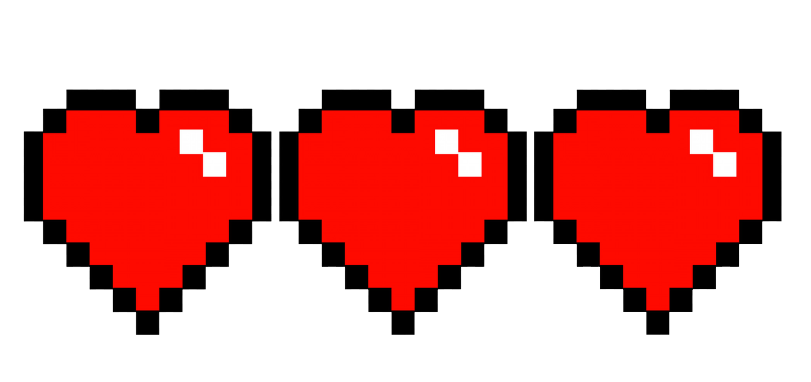
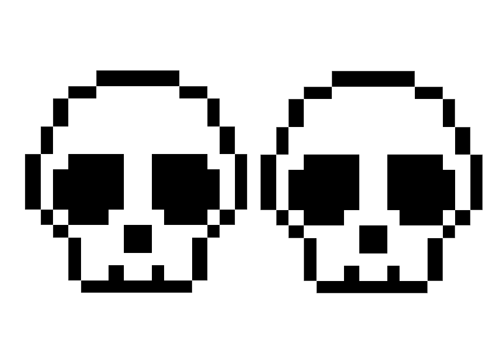

| SOBRE | HABILIDADES | FORTITUDE | DIFICULDADE |
|---|---|---|---|
| é localizado nas profundenzas de dirthmount, geralmente andam em bando, e guardam tesouros valiosos para aqueles que ousam passar por seus caminhos | Não é um inimigo agressivo, nem da para chamalo de inimigo. ele apenas está por ai cavando buracos. são imunes a ataques corpo a corpo, porém, não a magias! |  |  |